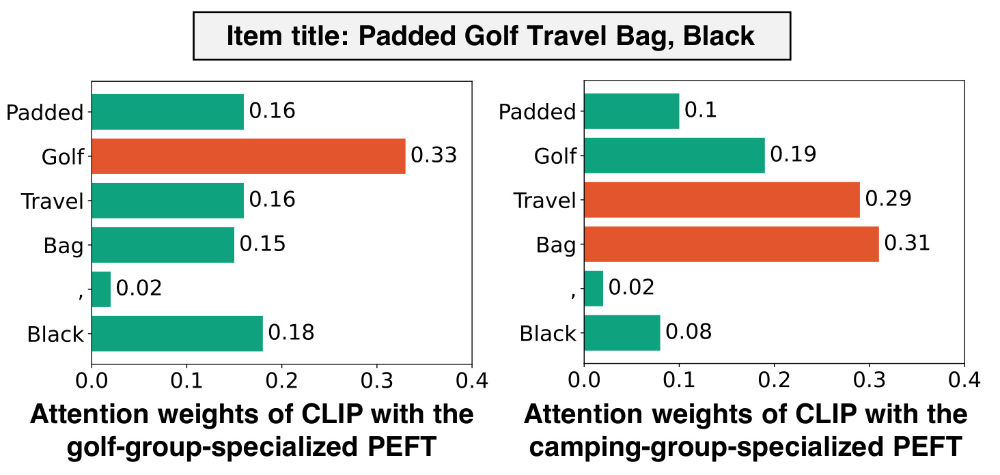
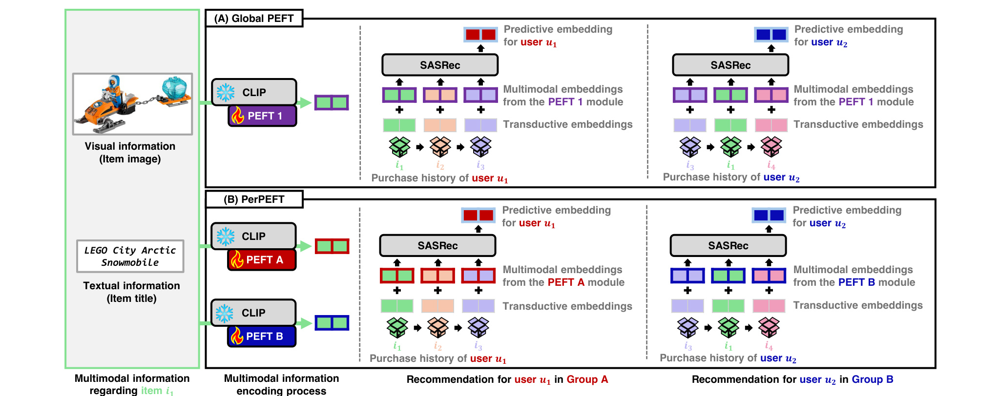
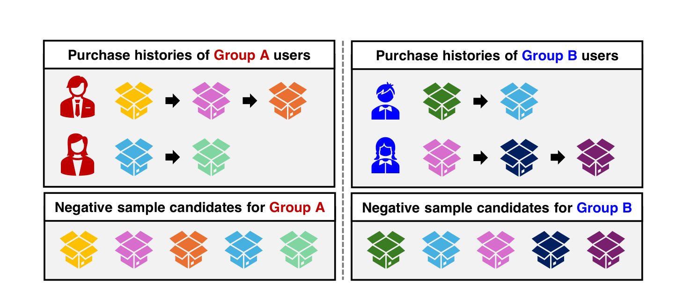
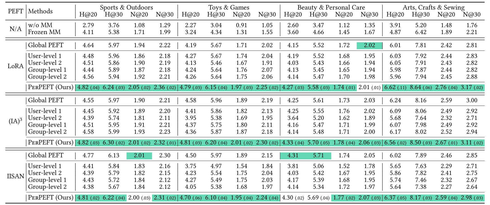
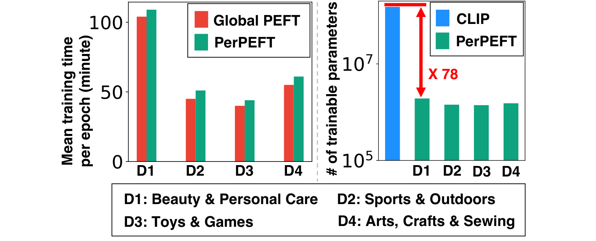
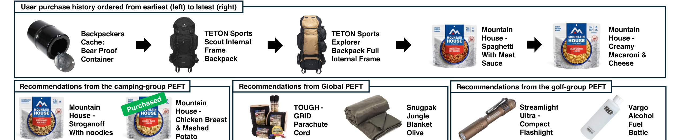
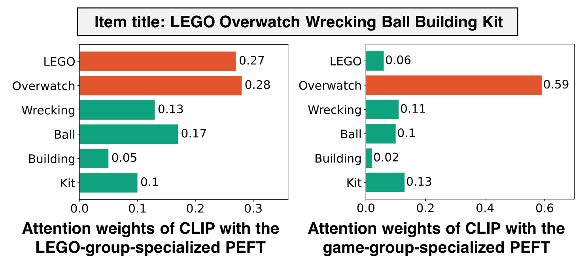
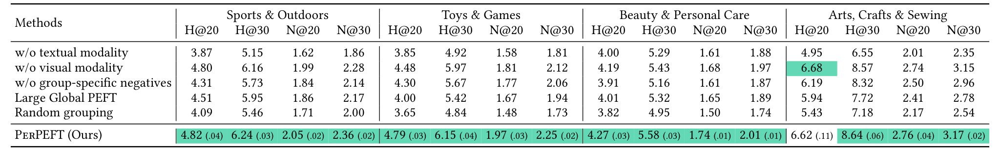

这是 KAIST 的 Sunwoo Kim、Hyunjin Hwang 与 Kijung Shin 发表在 WWW 2026 的论文 Personalized Parameter-Efficient Fine-Tuning of Foundation Models for Multimodal Recommendation。论文研究一个被忽视的细节：当我们用 CLIP 这样的多模态基础模型给电商物品编码时，PEFT（LoRA、(IA)³、IISAN 等）虽然把模型对齐到了「推荐任务」，但同一个物品对所有用户产生的 embedding 是完全一样的——CLIP 仍然「用户无感」。作者提出 PerPEFT，给每一类兴趣相近的用户单独训练一个 PEFT 模块，让 CLIP 对同一个 Padded Golf Travel Bag，在高尔夫人群眼中看到「Golf」，在露营人群眼中看到「Travel」「Bag」。完整复现资源在 GitHub: kswoo97/PerPEFT。本笔记按论文章节顺序拆解动机、四个方法模块、五个研究问题的实验证据，并补一些工程视角下的复现要点。
1. 背景和问题
1.1 多模态推荐与基础模型微调的当前形态
推荐系统在过去几年沿着两条主线扩展。第一条是把更多模态接入物品侧表示：除了 ID embedding，把商品标题、商品描述、商品图片、商品视频封面甚至短视频帧等模态都送进推荐塔，让模型不再只能依赖 ID 共现来推断兴趣。第二条主线是借助预训练基础模型替代过去自训练的小型多模态编码器：直接复用 CLIP、SigLIP、BLIP 这类在亿级图文对上做过对比预训练的模型来得到文图联合表示，再让这些表示替换或增强 ID embedding。两条主线交叉之后，电商和短视频领域的多模态推荐主流做法逐步收敛成一个非常具体的 pipeline：用 CLIP 把每件商品的图文编码成 $(\mathbf{x}_k, \mathbf{y}_k)$，过一个 MLP 投影器拼成多模态 embedding $\mathbf{m}_k$，再与 transductive ID embedding $\mathbf{h}_k$ 相加得到最终物品 embedding $\mathbf{z}_k$，最后把 $\mathbf{z}_k$ 序列送入 SASRec、BERT4Rec 这类序列推荐主干，预测下一件被购买的商品。这个 pipeline 在 Amazon Reviews、淘宝、抖音等数据上反复被验证比纯 ID 的序列推荐有 5%–15% 的相对提升，因此被视为新的事实标准。
但 CLIP 不是为推荐任务训练的，它的对比预训练目标是对齐自然语言描述与图像，并不知道哪些视觉或文本特征会真正驱动购买决策。直接冻结使用，效果离针对推荐任务的全量微调有明显差距：在论文 Table 2 的 Frozen MM 行可以看到，相同 SASRec 主干下冻结 CLIP 的 NDCG@20 比 LoRA-Global PEFT 大约低 10%–15%。但反过来，全量微调一颗约 $1.51\times 10^8$ 参数的 CLIP，对推荐场景的训练算力和显存预算都不友好——尤其当物品池在百万级、训练数据需要 30 epoch 以上时，全量微调的吞吐会成为系统瓶颈。这就是 PEFT 走上前台的理由：在 CLIP 内部插入少量可训练参数（LoRA 的低秩 ABAB 矩阵、(IA)³ 的逐维度缩放门控向量、或 IISAN 的旁路 adapter side-network），用推荐损失反向传播时只更新这些少量参数，CLIP 主体权重保持冻结。Fu et al. 在 SIGIR 2024 的 IISAN 工作已经把这种范式做得很彻底：用 side-network 把梯度完全隔离在主干外，可训练参数压到 CLIP 的百分之一以内，训练时间显著降低，性能仍与全量微调可比。可以说，截止 2025 年，PEFT for Multimodal Recommendation 这条路线已经解决了「能不能用得起 CLIP」这一层成本问题，使得 CLIP 类基础模型在中等规模推荐场景下的部署成为可能。
1.2 真正没解决的问题：CLIP 的物品 embedding 仍然「用户无感」
但作者指出，PEFT 解决的是「效率」，没有解决「个性化」。PEFT 训练完之后，所有用户共享同一组 PEFT 参数 $\theta$，因此同一件商品 $i_k$ 在所有用户面前永远被编码成同一个 $\mathbf{m}_k$。这与真实购物行为强烈冲突：不同兴趣的用户在同一件商品上关注的特征本就不同。模型收藏者关注配色与造型，硬核玩家关注题材、平台、IP 阵营；登山爱好者看一只双肩包关注负载、防水与扣具，时尚买家看同一只包关注品牌、外观、配色与材质；母婴用户买玩具关注安全、教育属性、年龄段适配，而玩家用户买同一件玩具关注 IP 阵营与稀有度。一个对所有人都一样的 $\mathbf{m}_k$，注定只能拟合一种「平均偏好」，把那些「在某个人群里特别重要、在另一个人群里几乎被忽略」的信号统一压缩成噪声。

Figure 1 是这篇论文 motivation 的关键证据。它把一只「Padded Golf Travel Bag, Black」喂给 CLIP，并展示最后一层 self-attention 从 [EOS] 到每个文本 token 的权重。装备了「高尔夫人群专属 PEFT」的 CLIP 把 0.33 的最大 attention 给了 Golf token，剩下 Padded、Travel、Bag、Black 都被压到 0.15–0.18 的中等区间，相对均匀；装备了「露营人群专属 PEFT」的同一个 CLIP，则把 0.29、0.31 分别给了 Travel、Bag，反而把 Golf 压低到 0.19、把 Black 压低到 0.08。同一件商品、同一个语言模型、同一份输入 token 序列，只是因为前置的 PEFT 模块换了一个，CLIP 的注意力重心就完全跟着用户兴趣搬家：在高尔夫人群里它把这只包识别为「带 Golf 标签的高尔夫装备」，在露营人群里它把同一只包识别为「适合旅行装载的大容量包」。这正是作者想要的「用户感知」表示，也直接指明了一种实现路径：让 PEFT 本身承担「个性化」职责，而不是让上游 CLIP 或下游 ID embedding 单独扛。从工程角度看，这种「视角切换」如果能稳定复现，意义不止于推荐排序——同样的物品库被分组 PEFT 重新编码后，召回、相似物品、商品相册排序、广告创意选择都可以共享这种「人群感知」的表示，杠杆比加几条人群规则更大。
1.3 现有 PEFT 在推荐中的两个缺口
把上面的观察落到工程语言，作者其实在指出现有路线的两个具体缺口。
第一，「PEFT-after-foundation-model」的设计没有显式个性化接口。LoRA、(IA)³、IISAN 这些方法都是从 NLP/CV 通用 transfer learning 演化来的，关注的是「单一下游任务能不能更好地用上预训练模型」。它们的设计假设是「下游任务有一个统一的目标分布」，并没有「用户群体」这一概念。把它们直接搬到推荐，等同于把推荐场景视作一个单一下游任务，本质上仍是「群体平均」。当推荐场景内部其实包含多个互相差异显著的兴趣子群时，这种「单一任务假设」就成了天花板：模型不得不在多个偏好分布之间妥协，最终学到的是几条最强偏好的妥协形态，而牺牲了细分人群的判别力。
第二，传统在推荐侧加的个性化手段——用户 embedding、群体 embedding、用户作为序列首/末元素 token、用户与物品 embedding 拼接、SSE-PT、PUMA 等——都作用在 SASRec 之上，停留在「行为序列层面」做个性化。它们改变的是 user-side 的检索表示，但 item-side 的 $\mathbf{m}_k$ 仍然是用户无感的。这意味着即便用户兴趣再独特，CLIP 给出的物品表示也无法跟着调整；推荐系统只是在「相同物品向量场」上做用户侧的偏移调整，没有真正利用基础模型本身的可塑性。后续 RQ1 数据会反过来印证这个直觉：把 user embedding 或 group embedding 加在 SASRec 上，相比 Global PEFT 基本带不来稳定增益（48 个 baseline 设置里有不少甚至比 Global PEFT 还差），说明个性化的瓶颈不在「user-side 输入是否丰富」，而在「item-side 表示是否因人而异」。
PerPEFT 想填的就是这两个缺口，方法是「把个性化提到 PEFT 模块这一层」：用户先按兴趣聚类，每一类用户分配一份属于自己的 PEFT，模块只用本组用户的数据训练，从而强制学到本组群体偏好下「真正影响购买」的视觉/文本特征。这种做法是对 PEFT 思想的一次「场景化扩展」：原本 PEFT 是「One PEFT per task」，PerPEFT 把它扩展为「One PEFT per user group within one task」，让一个推荐任务内部承载多套并行的轻量适配。剩下的工作是把这个直觉做成可训练的目标、可控成本的训练 pipeline 与可解释的人群定义机制，这就是论文第 3 节的内容。
2. 方法
2.1 符号与 Global PEFT 基线
为了让 PerPEFT 的差异看得清楚，作者先给出一个干净的 Global PEFT 基线。这个基线既是 PerPEFT 的「初始化父模型」，又是后续所有 baseline（Frozen MM、User-level 1/2、Group-level 1/2）的共同骨架，因此要先把它讲透。
记用户集合为 $\mathcal{U}=\{u_1,\dots,u_{|\mathcal{U}|}\}$，物品集合为 $\mathcal{I}=\{i_1,\dots,i_{|\mathcal{I}|}\}$。每个用户 $u_t$ 由购买历史序列表示，每件物品 $i_k$ 同时具备图像 $x_k^{(img)}$、文本描述 $y_k^{(txt)}$，以及一个可学习的 transductive ID embedding $\mathbf{h}_k\in\mathbb{R}^d$。再记多模态基础模型为 $f$，挂了 PEFT 模块 $\theta$ 之后写作 $f_\theta$；它接受图文对返回 $f_\theta(x_k^{(img)}, y_k^{(txt)})=(\mathbf{x}_k,\mathbf{y}_k)$，其中 $\mathbf{x}_k,\mathbf{y}_k\in\mathbb{R}^{d'}$，分别是经 PEFT 适配后的视觉与文本 embedding。注意这里 $d$ 是 transductive embedding 维度（论文里固定为 32），而 $d'$ 是 CLIP 输出维度（CLIP-base 通常是 512），两者不同；MLP 投影器的作用之一就是把维度对齐。
Global PEFT 用以下流程产出最终物品 embedding：
符号解释：MLP 是一个统一的投影器，[·||·] 是向量拼接，+ 是逐维相加，$\mathbf{x}_k, \mathbf{y}_k\in\mathbb{R}^{d'}$ 分别是 PEFT 适配后 CLIP 输出的视觉与文本 embedding，$\mathbf{h}_k\in\mathbb{R}^{d}$ 是物品 $i_k$ 的 transductive ID embedding，$\mathbf{m}_k\in\mathbb{R}^{d}$ 是融合后的多模态 embedding。这里有三件事要看清。第一，$\mathbf{m}_k$ 完全由 $\theta$ 和 MLP 决定，与用户 $u_t$ 无关——也就是说所有用户在 Global PEFT 下看到的都是同一个 $\mathbf{m}_k$。第二，ID embedding $\mathbf{h}_k$ 才是 user-item 交互信号的主要载体，但它本质是从离散索引学到的，包含的语义信息有限：模型从未真的「看到」物品的视觉或文本内容。第三，「相加」而不是「相乘」或「门控」的融合方式让 $\mathbf{m}_k$ 与 $\mathbf{h}_k$ 在梯度上彼此独立——优化 $\mathbf{h}_k$ 不会反过来改变 PEFT 模块，反之亦然。这种简洁的相加结构在 IISAN 等前期工作中被反复使用，是一种工程可控的耦合方式。
推荐部分用 SASRec 做序列建模。给定用户 $u_t$ 的购买历史 $[i_{t,1},\dots,i_{t,n}]$，先取出前 $n-1$ 件的最终 embedding 序列 $[\mathbf{z}_{t,1},\dots,\mathbf{z}_{t,n-1}]$ 输入 SASRec，得到逐位置的预测 embedding $[\mathbf{z}'_{t,1},\dots,\mathbf{z}'_{t,n-1}]$。训练时用「下一物品」做 BCE with negative sampling：
其中 $\{i_{a_p}\}\subset\mathcal{I}$ 是从全量物品集合中随机抽取的负样本，$\sigma$ 为 sigmoid。注意公式中的「正号项」是负样本得分（要被惩罚抬高），「负号项」是真正下一物品得分（要被推高的对数似然），这是 SASRec 原版写法。优化目标会同时更新四组参数：PEFT 模块 $\theta$、transductive ID embeddings $\mathbf{h}$、MLP 投影器、SASRec 主干。一个常见的工程误解是认为「PEFT 训练只更新 PEFT」——在 Global PEFT 这里并不是，PEFT 训练时所有「非冻结」的参数都参与梯度下降，CLIP 主体冻结，但下游 ID embedding 与 SASRec 都跟着 PEFT 一起更新。这一点在 PerPEFT 的训练里也保留。
推理阶段，把整条购买历史 $[\mathbf{z}_{t,1},\dots,\mathbf{z}_{t,n}]$ 全部喂入 SASRec，取最后一位的 $\mathbf{z}'_{t,n}$ 作为用户当前的预测 embedding $\mathbf{u}_t$，再与每件物品 embedding $\mathbf{z}_j$ 做内积 $\mathbf{u}_t^{\top}\mathbf{z}_j$ 排序，取 Top-K 推荐。这个 $\mathbf{u}_t$ 不仅是推理时的用户表征，它在 PerPEFT 的 §2.3 中还会被重新利用为「用户兴趣画像」用来 K-Means 聚类——这是论文里一个非常聪明的「不引入新模型」式设计。
这个基线非常重要：第一，所有 baseline（Frozen MM、User-level 1/2、Group-level 1/2）都是它的衍生；第二，PerPEFT 的整个 pipeline 也是从 Global PEFT 派生的，连参数初始化都直接复用 Global PEFT 的训练结果。可以把 Global PEFT 理解为「PerPEFT 的预热模型 + 兴趣画像生成器 + 公共主干提供者」，三重身份让它的训练质量直接影响 PerPEFT 的上限。
为了帮助后面理解三个不同 PEFT backbone 的差异，这里也先点出三者的具体形态：
- LoRA：把 transformer 注意力中的 query/value 投影矩阵 $W$ 重参数化为 $W + AB$，其中 $A\in\mathbb{R}^{d\times k}, B\in\mathbb{R}^{k\times d'}$，$k$ 远小于 $d, d'$。训练只更新 $A, B$，CLIP 原权重 $W$ 冻结。每层注意力贡献 $2dk$ 参数，是「在主干内部」做加性修改。论文里设 $k=4$。
- (IA)³：在 transformer 的 key/value 投影与 FFN 第一层之后，乘上一个可学习的缩放向量 $\mathbf{l}\in\mathbb{R}^d$，即 $\mathbf{z} \mapsto \mathbf{z}\odot \mathbf{l}$。参数量极小，只跟通道维度一阶相关，是「逐维度门控」。
- IISAN：把 adapter 放到 CLIP 主干旁边的 side network，CLIP 主干前向但不回传梯度，side network 从中间层吃 CLIP 的激活、单独前向反传。这种「旁路 adapter」让训练不需要通过 CLIP 巨型主干做反向传播，吞吐显著提高。
PerPEFT 与三者完全解耦：只要这套 PEFT 能被「实例化」到每个用户组，就能套用 PerPEFT 框架；这种 PEFT-agnostic 性质是论文反复强调的卖点之一，意味着未来如果有更强的 PEFT 出现，PerPEFT 框架几乎不需要改动。
2.2 PerPEFT 总体架构：用户分组 + 组专属 PEFT
PerPEFT 的核心改造是「把单一 $\theta$ 换成一组 $\{\theta^{(c)}\}_{c=1}^{C}$」，配套地把单一 MLP 投影器也换成 $\{\mathrm{MLP}^{(c)}\}_{c=1}^{C}$。其中 $c$ 是用户群索引，$\mathcal{U}=\bigcup_{c=1}^{C} \mathcal{U}^{(c)}$ 是用户的硬划分。简单地说，PerPEFT 把原本 1 套 PEFT、1 个 MLP 投影器、1 套 transductive embeddings、1 个 SASRec 的四件套，改成 C 套 PEFT、C 个 MLP、1 套 transductive embeddings、1 个 SASRec 的「分簇套件」。
这里有几种被作者主动排除的替代设计也值得一提，因为它们直接帮助理解为什么 PerPEFT 这么设计：
- 方案 A：所有组件全分组。把 PEFT、MLP、transductive、SASRec 都按组复制。后果是参数翻 $C$ 倍，长尾 ID embedding 由于看不到跨组的协同信号会失去判别力。
- 方案 B：只分组 SASRec。把 PEFT 共享、SASRec 分组。后果是物品 embedding 仍然「用户无感」，只是排序逻辑分组，无法解决论文 §1.2 的核心问题。
- 方案 C：在 Global PEFT 之上加 user/group embedding（baseline 中的 User-level/Group-level）。在 SASRec 输入侧加 user/group embedding，物品端不变。后果是 RQ1 验证的——传统个性化方法在 PEFT 基础上几乎无增益。
- 方案 D：单一容量更大的 PEFT（消融中的 Large Global PEFT）。让一个 PEFT 模块拥有与 8 个 PerPEFT 模块加起来同样的参数量。后果是消融数据显示性能仍然略低，说明真正起作用的是「结构性的人群划分」，不是单纯的容量。
PerPEFT 选的是「只分组 PEFT 与 MLP，其他共享」，是这几种方案里效率/精度比最高的折中。它的隐含信念是：「物品向量是个性化的载体，但用户行为序列建模是公共的」。这一信念在电商场景里相对成立——同样一段「最近买了几件运动相关商品」的历史，无论这个人是属于「专业户外」群体还是「都市运动」群体，「序列预测下一件商品」的逻辑是通用的，只是物品向量空间的语义需要因人而异。在短视频或资讯流场景里，这个信念可能不完全成立（不同人对内容的浏览节奏本身差异巨大），可能需要把 SASRec 也部分分组才行；这是把 PerPEFT 思想迁移到其他场景时要重新评估的设计选择。

Figure 2 是这套架构的「设计平面图」。从左侧公共输入区可以看到，每件物品仍然只有一张图和一段文本；多模态信息进入 CLIP+PEFT 之后才发生分裂。上半部分 (A) 是 Global PEFT：所有用户共用 PEFT 1，输出唯一的紫色 multimodal embedding，加到 transductive embedding 上送进各自的 SASRec。下半部分 (B) 是 PerPEFT：Group A 用户 $u_1$ 会用 CLIP+PEFT A 给同一件 LEGO 雪地摩托产出红色 multimodal embedding，Group B 用户 $u_2$ 同样这件商品则走 CLIP+PEFT B 产出蓝色 multimodal embedding。再往右看会发现一个关键设计：尽管 multimodal embedding 分组特化，transductive ID embeddings 与 SASRec 主干仍然跨组共享——图中两个 group 的 SASRec 框是同一个，transductive 颜色块也保持同色。
数学上写出来就是：对于 $u_t \in \mathcal{U}^{(c)}$，
其中 $(\mathbf{x}^{(c)}_k, \mathbf{y}^{(c)}_k) = f_{\theta^{(c)}}(x_k^{(img)}, y_k^{(txt)})$。注意 $\mathbf{h}_k$ 没有 $(c)$ 上标——它是跨组共享的 transductive embedding；MLP 与 PEFT 都有 $(c)$ 上标，意味着每个用户群训练时只更新自己那一组的多模态参数。SASRec 的内部参数 $\Theta_{\text{SASRec}}$ 同样没有 $(c)$ 上标。
这一共享决策不是顺手做的，作者在 §3.2.4 给出了两条理由：第一，如果 ID embedding 和 SASRec 也按组复制，参数量会翻倍以上，而 PEFT 个性化的优势就被参数膨胀稀释；第二，作者在前期实验中观察到 ID embedding 和主干跨组共享时性能并不下降，反而对低频物品更友好——共享 transductive 让所有用户的交互信号都能给同一颗 $\mathbf{h}_k$ 做更新，长尾物品的 ID embedding 不会因为只在某一组出现就被欠拟合。这样的设计选择让 PerPEFT 的参数增量被严格限制在「PEFT 模块 + MLP 投影器」这两个轻量组件上，为后面 RQ2 「参数仅占 CLIP 的 1.3%」奠定结构基础。
从训练阶段与推理阶段的差异看，PerPEFT 也维持了 Global PEFT 的「训练时拿前 n-1 件 → 预测下一件，推理时拿全部 n 件 → 取末位预测向量」的范式，只是公式里所有的 $\mathbf{z}_k$ 都加上了 $(c)$ 上标，并且对同一个用户始终使用该用户所属群的 PEFT 与 MLP。推理时如果是已经被分组的老用户，整条链路与 Global PEFT 完全一致；如果是冷启动新用户，则需要先用 Global PEFT 路径推断一个 $\mathbf{u}_t$，再用最近邻或重新跑 K-Means 选定组。
2.3 用户分组：让 Global PEFT 的预测 embedding 当兴趣画像
要给每个用户分配一个 PEFT，先要决定怎么分组。作者没有发明新的聚类算法，而是把分组问题转化成「用什么向量表征用户兴趣」的问题，然后让 K-Means 接管。这一处理方式相比「直接用人口学标签」「直接用购买行为统计」「直接用预训练 LLM 嵌入用户描述」等替代方案，最大优点是「在线兼容性」：所有需要的输入都是已有 pipeline 的中间产物，部署时不需要额外打通用户标签库或 LLM 服务。
具体做法是：先把 Global PEFT（§2.1）完整训练 10 个 epoch（论文 §C.2 给出的训练协议），训练结束后按推理流程把每个用户 $u_t$ 的全部购买历史送入 SASRec，取末位预测 embedding $\mathbf{u}_t := \mathbf{z}'_{t,n} \in \mathbb{R}^d$ 作为用户兴趣表示。直觉是：$\mathbf{u}_t$ 是「能最好预测该用户下一件商品的向量」，本质上压缩了用户的购买偏好，且空间维度（$d=32$）小、计算便宜。这个用法可以看成「用判别式目标训出来的兴趣向量做聚类」，比起直接用 Word2Vec 等生成式 user embedding 做聚类，兴趣维度的判别力更高。
然后在这些向量上跑 K-Means（论文用的是 K-Means++ 初始化），得到 $\mathcal{U} = \bigcup_{c=1}^{C}\mathcal{U}^{(c)}$ 的硬划分。作者强调 PerPEFT 不绑定 K-Means。附录 C.4.3 用 GMM（Gaussian Mixture Model）重做了同样的实验，K-Means 与 GMM 在三个测试数据集上的 H@20 与 N@20 表现 paired t-test p-value 都 ≥ 0.157，没有统计显著差异。这给工程实现留了余地：可以直接接 FAISS 的 K-Means 减少时间，也可以接 DBSCAN/层次聚类做更解释性的群体定义，只要兴趣向量本身有意义就行。
对组规模也有了硬约束。组数 $C=8$ 是论文默认设置，附录 C.4.2 显示 4 组、8 组、16 组三档里 8 组最优；4 组太粗（一群「混杂兴趣」用户被强行塞在一起），16 组太细（单组训练样本不足，PEFT 容易欠拟合）。附录 C.4.1 还报告了组规模分布：即使最小的群也占 6.5% 的用户，说明 K-Means 在这种 32 维兴趣向量上不会出现某一两个超大类把其他类吞掉的「mode collapse」。换言之这是一种 healthy 的群体划分，每个 PEFT 都有不小的训练样本支撑。
值得补一句的是，作者也在 §4.4 的脚注里给了一些「可解释性证据」：在 K-Means 划出的 golf 群里有 70% 的用户买过标题含 golf 的商品（而全体数据集只有 9%）；camping 群里有 83% 的用户买过标题含 camp 的商品（vs 全体 41%）。这意味着 Global PEFT 的预测 embedding 经 K-Means 后形成的群，不仅在向量空间紧凑，也在自然语言层面对应了直观的兴趣标签。这种事后可解释性也降低了线上调试与运营沟通的成本。
补充一个工程层面的细节：聚类的频率与稳定性也值得关注。论文设定是「Global PEFT 训完后跑一次 K-Means，整个 PerPEFT 训练期间组定义不变」。这在学术评测里足够，但在线场景下用户兴趣会迁移，组定义需要周期性刷新。一个可行的方案是每周或每月用最新一周的购买数据重新 fine-tune Global PEFT，再重新 K-Means；为了保证组之间的连续性，可以用「贪婪二分图匹配」把新 K-Means 簇心与旧簇心一一对应，让 PEFT 模块版本与组 id 保持长期可识别。如果不做这种映射，每次重聚类后 PEFT 编号会乱掉，旧的 PerPEFT 缓存与监控指标都会失效。这是论文没有讨论但线上必须处理的问题。
还有两个对实际部署很关键、但论文没展开的细节。第一是「冷启动用户的组分配延迟」。新用户没有购买历史时无法直接产出 $\mathbf{u}_t$，论文给出的是「先用 Global PEFT 给一个估计，再分组」，但 Global PEFT 本身对零历史用户也只能产出近似空向量，本质上还是需要前 N 次交互产生历史后再分组。务实做法是在新用户阶段直接走 Global PEFT 推荐，等历史长到 5 件以上再切换到 PerPEFT；这样既避免误分组，又能保留 PerPEFT 在老用户上的增益。第二是「群体维度的可解释性产出」。论文用 K-Means 簇内 token 频率（70% golf 用户买过 golf 商品）做事后解释，但工程上需要每周自动产出「每个组的 Top 关键词与 Top 物品类目」给运营做人工 review；这类元数据也可以反哺召回的「人群定向」策略。这两条都是 PerPEFT 真正进入生产环境后必须补齐的拼图。
2.4 训练技术：组专属硬负样本
把每个 PEFT 分给一群用户之后，最自然的训练方式是「Group A 数据训练 $\theta^{(A)}$，Group B 数据训练 $\theta^{(B)}$，损失沿用 Global PEFT 的 BCE 公式」。但作者在前期实验中发现这种「只是按组拆数据」并不能稳定超过 Global PEFT，问题出在负样本上。

Figure 3 配图很直观：上半区是 Group A/B 用户的购买史，下半区是各自的「Negative sample candidates」。Group A 的负样本候选 = Group A 用户出现在购买史中的物品集合 $\mathcal{I}^{(A)}$；Group B 同理。这意味着 PerPEFT 训练 $\theta^{(c)}$ 时，正样本来自 $\mathcal{U}^{(c)}$ 的购买史、负样本来自 $\mathcal{I}^{(c)}$，二者空间一致。
作者用「positive item space vs negative sample space mismatch」概括这个问题：在 Global PEFT 协议下，正样本是真买过的商品，负样本却是从全量 $\mathcal{I}$ 抽到的、绝大多数从未在该组出现过的杂物。模型很容易找到一些跨域差异（例如「这是体育用品类商品 vs 这是化妆品类商品」）就把损失拉低，根本不需要学习「同一组用户里，golf bag 比 camping bag 更值得推荐」这种细粒度判别。从信息论角度，这等价于负样本噪声「太容易判别」，损失梯度很快被「域间区分」吸收，没有动力流向「域内 fine-grained 判别」。换成组内硬负样本之后，模型被迫在「这群用户都可能买」的物品空间内做精细区分，PEFT 模块才能真正学到「哪些视觉/文本特征是这群人买不买的关键」。这条直觉与 hard negative learning 的经典 representation learning 结论一致，作者也明确引用了 TripletCLIP（NeurIPS 2024）和 Robinson et al.（ICLR 2021）的研究：硬负样本能提升表示学习的判别力，但要注意「硬到什么程度」——既不能太软（学不到判别力），也不能完全是 noise 干扰（梯度噪声放大）。组内硬负样本是一种很自然的折中：它来自同一群体真实购买，因此天然「相关、但不重合」，是 PEFT 表示学习里理想的硬度。
形式化地，给定 $u_t \in \mathcal{U}^{(c)}$ 的购买历史，先用 $\theta^{(c)}$ 和 $\mathrm{MLP}^{(c)}$ 算出组特化的多模态 embedding $\mathbf{m}^{(c)}_{t,p}$，再算最终 embedding $\mathbf{z}^{(c)}_{t,p} = \mathbf{h}_{t,p} + \mathbf{m}^{(c)}_{t,p}$。把前 $n-1$ 位送入共享 SASRec 得到 $[\mathbf{z}^{(c)'}_{t,1},\dots,\mathbf{z}^{(c)'}_{t,n-1}]$。组特化损失为：
其中 $\{i_{a_p}\}\subset\mathcal{I}^{(c)}$ 是从 group-c 物品池中抽取的负样本。优化时同时更新组特化的 $\theta^{(c)}$、$\mathrm{MLP}^{(c)}$ 与全局共享的 transductive ID embeddings、SASRec 参数。注意这里写的「同时更新」意味着 transductive embeddings 与 SASRec 主干会受到所有组的梯度共同影响——它们看到的是「跨组拼起来的购买行为」，因此能保留「整体协同过滤」的能力，避免被某一组的偏好拽偏。
为了让训练时间不被组数 $C$ 拖垮，作者在 batch 维度做了一个简单但重要的优化：mini-batch 只装同一组的用户。这样在一个 batch 内只需要计算 group-c 的物品 embedding，不需要并行维护 $C$ 套图文 forward。一组训完一个 epoch 后切到下一组，整体训练时间在 4 个数据集上仅比 Global PEFT 高 1–14%（RQ2 给出具体数值），完全可接受。如果把 batch 内强行混入多组用户，每次都需要前向 $C$ 套 PEFT，吞吐会下降到 $1/C$；这是 PerPEFT 工程实现里第一个容易踩坑的细节。
训练流程上还有一个值得强调的细节：所有 PEFT 模块、MLP、transductive embeddings 和 SASRec 都用 Global PEFT 训练 10 epoch 后的参数做初始化，然后再做 20 epoch 的组特化训练。也就是说 PerPEFT 总训练成本是「10 epoch Global PEFT + 20 epoch PerPEFT」，并不需要从随机初始化重练，避免了冷启动阶段的梯度震荡。这种「先训公共模型，再分组特化」的两阶段范式，本质上是一种「先共识、后差异化」的训练顺序：让模型先把基础推荐能力学会，再用差异化的硬负样本去微调群体特化的 PEFT，可以同时获得稳定收敛与精细判别。
学习率和正则化策略上，论文用 AdamW 优化器，学习率从 $\{10^{-4}, 5\times 10^{-5}, 10^{-5}\}$ 搜，weight decay 从 $\{5\times 10^{-4}, 10^{-4}, 5\times 10^{-5}, 10^{-5}\}$ 搜，按 H@30 的 validation 表现选最佳；这是 PEFT 训练的常规配置。值得提醒的是 PerPEFT 阶段的学习率不一定要与 Global PEFT 阶段相同——后者更接近从零学起、需要较大学习率，前者已经有较好的初始化、应该用较小学习率做精细化调整。论文里这块作了统一调参，工程上可以再优化。Dropout 固定为 0.3，对 PEFT 模块本身没有额外的 dropout，这意味着「组特化的过拟合风险」主要靠组内样本量自身控制，因此组数 $C$ 不能太大（论文实验里 16 组明显劣于 8 组也呼应了这一点）。
还有一个细节值得点出：组特化 PEFT 在更新时，组外用户对该 PEFT 不会贡献梯度。这意味着组样本量越小、PEFT 收敛越慢。如果未来要把组数 $C$ 扩展到 32 甚至 128，需要考虑「跨组共享部分 PEFT 参数（hierarchical PEFT）」的方案，例如让所有组共享 PEFT 的低层 weight、只在高层做组特化；或者引入 MoE router 让多个组共用底层模块、按 token 选择高层模块。论文留下的扩展空间很大。
另一个值得关注的细节是「组特化损失与跨组共享参数的梯度耦合」。SASRec 和 transductive ID embedding 会同时被所有组的损失更新，因此存在一种「梯度冲突」的可能：Group A 训练 batch 让某个 transductive embedding 向某个方向移，下一个 Group B 训练 batch 又把它向相反方向拉。论文没有显式分析这一点，但从最终效果看冲突并不严重，可能的原因有两条：第一，transductive embedding 维度只有 32 维、模型容量有限，反复推拉会收敛到一种「群体协同的稳态」；第二，跨组共享损失梯度本质上仍然在共同优化「下一物品预测准不准」，目标函数一致，方向冲突有限。但工程上如果切到更大维度 transductive 或更复杂的多任务 SASRec（例如同时预测购买与点击），梯度冲突可能成为新的瓶颈，需要考虑 PCGrad、CAGrad 等多目标梯度调和方法。
最后从「为什么这样训能解决 §1.2 的问题」回头看，整个 §2.4 给出的训练协议在做三件事：第一，让 PEFT 模块的参数空间按组划分，强制不同人群的 PEFT 走向不同方向；第二，把负样本限制在组内购买池，让 PEFT 学到的是「组内细粒度判别」而不是「跨域分类」；第三，跨组共享 SASRec 与 transductive，保证全局协同信号不被组特化稀释。这三条机制共同作用，才有了 RQ4 中「CLIP attention 真的跟着分组变」的视觉证据，以及 RQ1 中「44/48 设置最优」的量化证据。任何一条缺失，PerPEFT 都退化成一个普通的多 PEFT 模型，效果可能不如单一 Global PEFT。
再补一个值得对照的视角：「PerPEFT 与多任务学习有什么不同」。表面上看，把 8 组用户当成 8 个任务、每个任务一份 adapter，是很自然的多任务学习形式。但 PerPEFT 与传统多任务学习的关键差别在「任务边界来自数据自己」：8 个组不是人为定义的语义类别，而是 Global PEFT 学到的兴趣向量 K-Means 自动产生的；任务定义本身随训练动态变化。这种「数据驱动任务」的设计避免了多任务学习的两个经典痛点：人工任务标注成本高、任务间梯度冲突难调和。PerPEFT 用聚类天然规避了第一个痛点；用「组内硬负样本 + 跨组共享主干」缓解了第二个痛点。这种「自监督式任务划分 + 部分共享 + 部分特化」的模式，未来可能成为推荐、对话、搜索等场景里 PEFT 个性化的通用模板。
2.5 参数开销与跨组共享的工程含义
参数开销分析放在论文 §3.4 和附录 D.1。以 (IA)³ 为 backbone、$C=8$ 为例：
- PEFT 模块：约 $368\mathrm{K}$ 参数（46K/组 × 8 组）。(IA)³ 每组本身就只有约 46K 参数（gating 向量），8 组合起来仍然不到半兆。
- MLP 投影器：约 $540\mathrm{K}$ 参数（68K/组 × 8 组）。
- Transductive 物品 embeddings：$470\mathrm{K}\sim 1\mathrm{M}$，跨组共享，规模随数据集物品数变化。例如 Beauty & Personal Care 有 31K 物品 × 32 维 ≈ 1M。
- SASRec 主干：约 $13\mathrm{K}$，跨组共享。
相比 Global PEFT，PerPEFT 多出的参数主要是「7 套额外的 PEFT + MLP」共约 $800\mathrm{K}$。即使把所有 PerPEFT 可训练参数加在一起，也只有 CLIP 那 $151\mathrm{M}$ 参数的约 1.3%，是名副其实的轻量增量。附录 Table 9 还报告了平均每 batch GPU 显存：Global PEFT 11.3GB、PerPEFT 12.1GB，多 0.8GB。这两组数据共同说明：PerPEFT 的「个性化」是在 PEFT 这一层做加法，并没有把存储/算力压力推回 CLIP 或 ID embedding 体系。
工程角度看，跨组共享的 ID embedding 与 SASRec 同时也带来一种隐性的「正则化」：如果某个组的 PEFT 学偏了，共享的 ID 信号会把序列预测拉回到「真实购买行为」上，而非完全被组内偏好拽走。这给后续可能的扩展（例如把 8 组扩到 32 组细分人群、或者按行为时段动态切组）留下了一定的稳健性余量。
部署上还有两条值得提前规划的事情。第一，离线物品 embedding 缓存策略要按组扩展：每件物品需要缓存 $C$ 份 $\mathbf{m}^{(c)}_k$，离线预计算成本相对 Global PEFT 是 $C$ 倍。对于 Top-N 高频物品全量缓存即可，长尾物品可以回退到 Global PEFT 表示或延迟加载，避免存储爆炸。第二，PEFT 模块的版本管理要与组定义绑定：每次重做 K-Means 聚类（例如季节性更新）后，新组与旧 PEFT 不能直接绑定，需要重新做一次「短训练」让 PEFT 和新组对齐；建议在 prod 中保留双版本以支撑平滑切换。这些工程考虑论文没有展开，但是把 PerPEFT 从 paper 推向 prod 的必经环节。
另一组容易被忽视的工程问题是：PerPEFT 与现有召回阶段如何对接。论文整套实验都在精排阶段（leave-one-out 协议下评估 Top-K 命中），但工业系统通常有召回→粗排→精排三层链路。如果只在精排接 PerPEFT，召回阶段的物品 embedding 还是 Global PEFT 表示，召回与精排的物品向量空间会出现「偏移」，可能引入 candidate skew——召回阶段错过的物品再厉害的精排也救不回来。务实做法是先在召回侧维护一份 Global PEFT 物品 embedding 用于 ANN 检索，再在精排阶段按用户组用 PEFT 重新计算 Top 候选的 $\mathbf{m}^{(c)}_k$ 做重排；这样既享受了 PerPEFT 的精细判别，又避免了召回向量空间的整体迁移。论文没有涉及这层架构问题，但任何想把 PerPEFT 落地的人都需要先把这套数据流梳理清楚。
最后值得在方法章末尾梳理一下 PerPEFT 的「核心因果链」：基础模型在多模态推荐里效果好，是因为它带来了内容理解能力；但内容理解的最佳形式并不是「对所有人都一样」，因为不同人群从同一件商品上提取的判别特征不同；要让基础模型具备「跟随人群切换视角」的能力，最自然的接口是 PEFT 模块，因为它本身就是「针对下游任务的轻量适配器」；把 PEFT 按人群分组，等价于把「下游任务」从「推荐」细化为「某一类人的推荐」；再用组内硬负样本配合，强制模型学到的是「这群人特别在意的判别特征」而不是「跨域的粗判别」。这条链路里每一步都有支撑——Frozen MM 证明了内容理解的价值，Figure 1/6 证明了「视角切换」的可见性，RQ5 的 w/o group-specific negatives 证明了硬负样本的必要性，Large Global PEFT 消融证明了「人群划分」而非「容量」是关键。整个 §2 的方法设计与 §3 的实验证据互为印证，构成一个完整、自洽的论证闭环。
从更宏观的视角看，PerPEFT 把过去 PEFT 范式里隐含的「单任务假设」明确松动了。在 NLP 与 CV 通用 transfer learning 时代，PEFT 的标准用法是「一个下游任务一份 adapter」；但当下游任务本身是一个多人群、异质需求的复杂场景时，这种「一份 adapter」的假设其实是把场景内部的差异一刀切平。PerPEFT 给出的回答是「把人群粒度也当成任务粒度的一部分」——对一个推荐场景，与其只调一份 PEFT，不如按人群拆成 $C$ 份 PEFT。这种做法把 transfer learning 从「task-level adaptation」推进到「sub-population adaptation」，对其他需要个性化的下游任务（个性化对话、个性化代码补全、个性化数学辅导等）也有借鉴意义。可以预期，下一波 PEFT 研究里会有更多工作沿着这条「sub-population PEFT」「mixture-of-PEFTs」「PEFT router」的路线展开，PerPEFT 在多模态推荐场景上做了第一个完整、稳健、可复现的范例。整个 §2 的方法叙事到这里收束：从 Global PEFT 的标准 pipeline 出发，逐步引入分组、组特化 PEFT、组内硬负样本、跨组共享主干四个组件，最终得到一个工程友好、可扩展的个性化基础模型微调框架。
3. 实验结果
3.1 实验设置
数据用 2023 版 Amazon Reviews 的四个垂直域：Sports & Outdoors、Toys & Games、Beauty & Personal Care、Arts/Crafts & Sewing。预处理上，三个超百万用户数据子采样 20%，Arts/Crafts 子采样 40%；再过 5-core 过滤；用商品标题作文本、商品图作图像两路模态。结果数据集规模在 19K–45K 用户、14K–31K 物品、平均序列长度 7.6–9.5、密度 0.0003–0.0006。
评估用 leave-one-out：每个用户最后一次购买做 test，倒数第二次做 validation，其余作为训练序列。指标用 Hit-Ratio@K 与 NDCG@K，$K\in\{20,30\}$。每个方法跑三个随机种子取均值，差异用括号里的标准差表示。
baseline 覆盖五类七种方法： - w/o MM：纯 SASRec 不引入多模态。 - Frozen MM：保留 Global PEFT 的多模态分支，但冻结 CLIP（不更新 PEFT）。 - Global PEFT：作者基线（§2.1）。 - User-level 1/2：在 Global PEFT 之上加可学习用户 embedding，一种作为序列末位元素，一种与每件物品 embedding 拼接。 - Group-level 1/2：把 User-level 替换成「群体 embedding」，所有 group-c 用户共享一份 group embedding。
PEFT backbone 用 LoRA（query/value 上低秩 adapter）、(IA)³（key/value/FFN 上逐维门控）、IISAN（side-network 旁路 adapter）三种。所有方法都跑 AdamW、学习率从 $\{10^{-4}, 5\times 10^{-5}, 10^{-5}\}$ 搜，weight decay 从 $\{5\times 10^{-4}, 10^{-4}, 5\times 10^{-5}, 10^{-5}\}$ 搜；SASRec 维度固定 32、dropout 0.3，两个 2-layer self-attention block、4 个 head；batch size 16；序列截断 10。PerPEFT 默认 $C=8$，先 10 epoch Global PEFT 再 20 epoch PerPEFT。硬件是 2× Intel Xeon Silver 4214R + 8× NVIDIA RTX 8000 48GB。
3.2 RQ1 多模态推荐性能
主结果是判定 PerPEFT 是否真正带来增益的核心证据。

按 backbone 一一读：
LoRA backbone。Global PEFT 已经把 Frozen MM 整体抬升约 13–25%，证明 LoRA 把 CLIP 微调到推荐任务确有意义。User-level 1/2、Group-level 1/2 这四种传统个性化方法相比 Global PEFT 时好时坏，没有稳定增益，例如 Sports & Outdoors 上 User-level 2 的 H@20 反而从 4.64 掉到 4.51。PerPEFT 则在四个域上把 H@20/H@30/N@20/N@30 全部推到当列最高，最大涨幅出现在 Toys & Games 的 H@20（4.19→4.79，+14%）和 Arts/Crafts/Sewing 的 N@20（2.42→2.76，+14%）。这是论文里强调的「Arts/Crafts NDCG@20 涨 15.3%」具体出处。
(IA)³ backbone。(IA)³ 本身就是该论文里最强的 PEFT，Global PEFT 在四个域里几乎都比 LoRA 表现更好。PerPEFT 在 (IA)³ 上的相对增益略小但依旧稳定：例如 Toys & Games H@20 从 4.58 抬到 4.81、Beauty H@20 从 4.25 抬到 4.33。值得注意 Arts/Crafts 上 PerPEFT 拿到 H@30 8.50，但 Group-level 2 那一列也接近 8.02，差距没有 LoRA 那么戏剧化。
IISAN backbone。IISAN 是 SIGIR 2024 专为多模态推荐设计的 PEFT，使用 side-network 让梯度不流回 CLIP。Global PEFT-IISAN 是三种 backbone 里 Sports & Outdoors 上唯一在 H@20 突破 4.77 的，但传统个性化在 IISAN 上明显劣化（User-level 1 在 Toys & Games 上 H@20 跌到 3.75）。PerPEFT 同样保持稳定增益，在 16 个设置里仅 Beauty H@20 / Arts H@20 等 4 个细项小幅低于 Global PEFT-IISAN（4.30 vs 4.31、6.37 vs 6.02），但 4 域 N@20/N@30 大多被推到 backbone 内最优。
合计 4 域 × 3 backbone × 4 指标 = 48 个设置，PerPEFT 在 44 个上拿下最优，足以支撑「PEFT 层做个性化比 user embedding 层做个性化更有效」的核心论点。配合 Frozen MM 跑出的「不微调 CLIP 全面落后」结论，可以反推出 PerPEFT 的增益主要来自「让 CLIP 跟着用户群体兴趣做差异化适配」，而不是某种隐性的容量提升。
3.3 RQ2 训练时间与参数量
PerPEFT 多养 8 套 PEFT，最容易被怀疑的是训练成本爆炸，所以作者把 scalability 单独列为 RQ2。

左侧 bar chart 比较「平均每 epoch 训练时间（分钟）」。D1 Beauty 上 Global PEFT 约 104 分钟、PerPEFT 约 108；D2 Sports 上 45 vs 51；D3 Toys 上 40 vs 44；D4 Arts 上 55 vs 60。最大相对差距约 14%（Toys & Games 上），其他都在个位数百分比。这印证了 §2.4 提到的 mini-batch 同组化设计——8 套 PEFT 并没有让训练时间变成 8 倍，因为每个 batch 实际上只前向一组 PEFT。
右侧 log-scale bar chart 把 CLIP（约 1.51 亿参数）与 PerPEFT 可训练参数放在一起，红色箭头标了「×78」的差距，意思是 CLIP 总参数大约是 PerPEFT 的 78 倍。换算回比例，PerPEFT 可训练参数只有 CLIP 的约 1.3%。再叠加附录 D.1 的显存数据（多 0.8GB），可以得出结论：PerPEFT 的训练成本（时间、显存、可训练参数三项）都没有显著恶化，没有以「轻量个性化」为名引入实质的资源膨胀。
唯一需要注意的是推理侧。附录 D.2 提到，PerPEFT 的物品 embedding 在离线预计算时按组重复 $C$ 次，因此 offline pre-compute 时间是 Global PEFT 的约 $C$ 倍（实验设置下约 8 倍）。但这是「一次性」成本，预计算后缓存即可。对已知组别的老用户，在线 inference 时间和 Global PEFT 完全相同；对未知用户，需要先用 Global PEFT 跑一遍 SASRec 计算 $\mathbf{u}_t$ 再分组，因此 inference 时间大约是老用户的 2 倍。生产部署里这个数字仍然可控，但工程上要预留好「冷启动用户的 grouping 流水线」。
3.4 RQ3 推荐结果的可读性差异
数值之外，作者还用真实推荐序列演示 PerPEFT 与 Global PEFT 的差别。

读这张图的方式不是「哪一行更好」，而是「哪一行更早体现细粒度兴趣」。Sports & Outdoors 用户的购物历史展示了一个清晰的演化：先买防熊罐，再连续买两个 TETON Sports 背包，最后接连入手了 Mountain House 系列的露营食品。如果模型只看「这是 camping 用户」，那 Global PEFT、golf-group PEFT 的推荐都没大错；但 camping-group PEFT 把视野收窄到「同一组用户最近转向露营食品」，于是它真的把 Mountain House Chicken Breast & Mashed Potato（带绿色 Purchased 标签）排进 Top-2。这是 group-specific 硬负样本的功劳：训练时只用露营人群买过的物品做负样本，模型不得不把粒度做到「露营食品 vs 露营装备」级别。
论文同章 Figure 5(b) 在 Toys & Games 数据集上展示了同类规律：一个连续购买 5 件 LEGO 城市/创造者车辆系列的用户，Global PEFT 抓到了「LEGO」这一层但推荐去了 Ninjago 机甲与 Batman 直升机；game-group PEFT 把 LEGO Star Wars Millenium Falcon 与 HALO UNSC MA5 Blaster 排上来，混入了「玩家收藏类」；LEGO-group PEFT 则保留 LEGO 主题并把它限定到「带车辆/载具」的细分，准确命中 LEGO Creator Super Soarer。两个案例直接证明，PerPEFT 多出来的不是「更多分类粒度」，而是「让 PEFT 模块学到了某一群用户特别在意的购买细节」。从工程视角，这种「能读出细分偏好的能力」对在线推荐的转化漏斗、节日活动选品、广告创意分组都有直接价值。
3.5 RQ4 设计目标验证
RQ4 回到设计目标本身：「让 CLIP 在不同用户群体上关注不同的物品方面」。验证方法是把 CLIP 最后一层从 [EOS] 到每个 token 的 self-attention 拿出来对比。

读这张图要把它和 Figure 1 一起看。Figure 1 用「golf travel bag」做了第一例子，golf-group PEFT 把 attention 集中在 Golf，camping-group PEFT 把 attention 分到 Travel、Bag。Figure 7 选了一件标题更复杂的玩具：LEGO Overwatch Wrecking Ball Building Kit。两个组在这件商品上呈现完全不同的注意力风格：LEGO-group 看到的是「LEGO 拼装包」语义（重 LEGO + Overwatch 两 token），game-group 直接锁定 IP（Overwatch 一票独大）。这意味着 PerPEFT 不只是「换了个 attention 形状」，而是真的让两个 PEFT 的内部 attention head 学到不同的「关注规则」：一套做「拼装类玩具的视角」，另一套做「IP 收藏类玩具的视角」。
更严谨的支撑在附录 C.5.1：作者计算了同一件物品在不同 PEFT 组下 attention 分布的 Jensen-Shannon 散度（JSD），inter-cluster JSD（不同组之间）显著大于 intra-cluster JSD（同组不同随机种子之间），三个数据集上差距分别为 0.0637 vs 0.0129、0.0516 vs 0.0109、0.0778 vs 0.0587。这说明 Figure 1 与 Figure 7 不是 cherry-picked 的两件商品，而是论文中所有商品平均下来的稳定模式：组间差异来自组别本身、而不是训练随机性。附录 C.5.2 还用 Grad-CAM 在视觉模态做了同样的对比（高尔夫人群关注球杆与鞋，露营人群关注绿色草皮），把这条「PerPEFT 让 CLIP 真正分群感知」的结论从文本扩展到图像。
3.6 RQ5 消融
最后是消融研究，回答「PerPEFT 的哪些组件真的有用」。

逐行读：
w/o textual modality。把商品标题模态全部去掉，性能在 4 个域上全面下滑，Toys & Games H@20 从 4.79 跌到 3.85，Arts/Crafts N@20 从 2.76 跌到 2.01。说明 CLIP 文本端是 PerPEFT 主要的语义入口；这也解释了为什么 Figure 1/Figure 7 都用文本 attention 来展示设计目标——文本是最直观、最具表达力的模态。
w/o visual modality。把商品图模态去掉，性能下降明显小得多，Sports & Outdoors H@20 仅从 4.82 掉到 4.80，Arts/Crafts H@20 反而上升到 6.68（该列还出现了唯一一个比完整 PerPEFT 更高的设置）。这告诉我们一件事：在 Amazon 这类标题写得详细、属性结构化的电商数据上，文本模态承担了大部分判别力，图像更多是补充。但在 Beauty 等更依赖外观的域，去掉视觉仍会失分（H@20 4.27→4.19）。这条结论对工程实践很有用——在标题信息密集的业务（如商品 SKU 完整）里，可以优先投资文本 backbone；在标题稀疏、依赖看图选品的业务（如二手平台、买手店）里，视觉模态值得更高权重。
w/o group-specific negatives。把硬负样本退回到 Global PEFT 的全集采样，性能在所有 4 域下降到接近 Global PEFT 基线（Sports H@20 4.31，Toys 4.30，Arts 6.19）。这与 §2.4 的设计判断完全吻合：硬负样本是 PerPEFT 能在 Global PEFT 之上跨步的关键放大器；没有它，光靠分组与组特化 PEFT 模块不够。
Large Global PEFT。把单一 PEFT 模块的容量扩到与 PerPEFT 8 套 PEFT 加起来近似（参数差 < $10^3$），性能反而轻微下降。这个对照非常关键，它排除了「PerPEFT 的提升只是来自更多参数」这一替代解释。说明真正起作用的是「不同人群专属」的结构性偏置，而不是「容量更大」的暴力增益。
Random grouping。保持「分组 + 组特化 PEFT + 组内硬负样本」的训练 pipeline，唯一改变是用户分组随机；性能跌得最猛，Toys & Games H@20 从 4.79 跌到 3.65，Arts/Crafts N@20 从 2.76 跌到 2.17。这告诉我们 PerPEFT 不是「随便分点儿组就行」，组的语义意义（来自 Global PEFT 学到的兴趣向量）是性能的另一把关键钥匙。
合并这五条消融结论可以得到一个清晰的「贡献分解」：组的语义性 ≈ 组内硬负样本 > 文本模态 > 视觉模态 ≈ 容量本身。这也意味着如果想把 PerPEFT 复刻到新场景，最不能省的是「组定义」和「组内硬负样本」这两步。
4. 总结
4.1 我的判断
PerPEFT 的价值不在于发明了一个新模型，而在于把「个性化」这个概念从 user/item 表示这一层下推到了 PEFT 模块这一层，让基础模型本身具备了「面向不同用户群体的视角切换」能力。这是过去多模态推荐里少有人正面回答的问题：CLIP 这类基础模型怎么和「人群兴趣」做绑定？传统答案是把人群信号编码到 user embedding 再喂下游，本论文给出的答案是「直接让 CLIP 对不同人群编码不同的物品 embedding」。两个答案的本质差异在于：前者只让推荐塔变聪明，后者让物品表示本身变聪明，可惠及所有下游消费（召回、相似商品、广告 creative selection、商品相册排序等）。
从论证强度看，论文给出的证据链很完整：动机有 attention 视觉化（Figure 1）、方法有清晰的两层架构对比（Figure 2）和损失公式（Eq. 1/Eq. 2）、性能有 48 设置主表（Table 2）、效率有训练时间和参数对比（Figure 4）、可解释性有定性案例（Figure 5）和注意力对比（Figure 6/Figure 7）以及定量 JSD（附录 Table 7）、稳健性有 5 种消融（Table 3）+ K-Means/GMM 对照（附录 Table 6）+ 用户组数扫描（附录 Figure 7）。这种程度的实验密度在 PEFT for Recommendation 文献中并不常见。
需要冷静看待的是：所有实验都在 Amazon Reviews 上，且是子采样后约 20K–45K 用户的中等规模；尚未在工业级（百万至亿级用户、亿级物品）系统中验证。论文承认这一点，但没有给出工业部署所需的「在线 A/B 增益」「冷启动用户分组延迟」「PEFT 模块版本回滚策略」等数据，这是后续真正决定能否落地的关键。
4.2 工程启发与复现建议
如果想把 PerPEFT 复刻到自己的推荐栈，可以按以下顺序：
- 优先确认兴趣向量的可靠性。PerPEFT 高度依赖 Global PEFT 训练出的 $\mathbf{u}_t$ 作为兴趣向量。如果业务里 SASRec 这种序列模型本身效果不好，得到的 $\mathbf{u}_t$ 信息量不足，K-Means 出的组就会偏。建议在小流量上先单独评估 Global PEFT 的 NDCG，再决定是否上 PerPEFT。
- 小心组数 $C$ 的选择。论文在 4/8/16 间扫，8 组最优；这是对 19K–45K 用户的设置。规模更大时大概率需要更细的组数（例如 32–128），但要避免组规模塌缩。可以加入「最小组规模约束」例如 ≥ 1% 用户。
- 组内硬负样本必须按业务负样本管线落地。建议用「按组维护负样本池」的方式，把 $\mathcal{I}^{(c)}$ 作为 in-batch 负样本来源；避免训练时为每条样本临时扫描全组购买史。
- mini-batch 同组化是吞吐瓶颈的关键。如果直接在每个 batch 内混合多组用户，会被迫并行 forward 多套 PEFT，吞吐会掉到 $1/C$。建议沿用论文的「分组数据 loader + 轮询组」实现，并配合 gradient accumulation 控制不同组样本量差异。
- 离线物品 embedding 缓存按 $C$ 倍预算。物品库越大、组数越多，离线计算成本越显著。可以引入半监督方式：只对 Top-N 高频物品保留所有组的 embedding，对长尾物品回退到 Global PEFT embedding。
- 冷启动用户走两阶段 inference。先用一份 Global PEFT 路径产出 $\mathbf{u}_t$，再分组、查缓存做最终排序。要把第二阶段的端到端延迟拆开监控，保证不被首阶段 SASRec 拖慢。
- 关注文本与视觉模态权重。消融表表明在标题信息充分的电商上，文本模态贡献远大于视觉。如果业务侧使用更短的标题（例如二手平台），需要重新评估视觉模态权重，必要时引入更强视觉编码器（DINOv2、SigLIP）。
- K-Means 不是唯一选项。论文已经验证 GMM 等价，建议根据业务可解释性需求选择聚类算法。例如希望群体可解释，可以用 K-Means + 群体显著 token 提取（类似论文 §4.4 footnote 提到的「70% 的 golf 用户购买过 golf 商品」）。
- 可与现有推荐栈渐进集成。PerPEFT 不替换 SASRec、ID embedding 与召回层，仅替换 CLIP 后端的 PEFT 模块。可以先做 shadow 流量、再做小流量 A/B，把对现有系统的侵入最小化。
4.3 局限与后续跟进
论文自陈三处局限：缺乏理论解释为什么组特化 PEFT 提升 CLIP 表征质量；要求每件物品都有完整图文模态（缺模态怎么办尚未处理）；硬性把用户分到唯一一组，对多兴趣用户不够友好。
可以预见的后续工作方向至少有四条：
- Soft assignment：把硬性 K-Means 换成 soft membership（每个用户在 $C$ 组里有概率向量），$\mathbf{m}^{(c)}_k$ 用 mixture-of-PEFTs 加权产出。这能直接解决「多兴趣用户」的问题，但训练成本与梯度路径要重新设计。
- PEFT 之上的 router：参考 LLM 的 MoE router，给每个用户/请求动态选择若干 PEFT 组合而非固定一组，可能在更细粒度兴趣建模上取得增益。
- 缺模态自适应：把缺失模态视作训练样本，引入 modality dropout，让 PerPEFT 对纯文本/纯视觉商品也鲁棒。这是冷门商品上线最常遇到的真实问题。
- 跨平台/跨时段的组迁移：用户的兴趣会随节令、促销、生命阶段迁移，固定组定义会逐渐过时。需要研究「组重新聚类的频率」「迁移期老 PEFT 模块的渐进 fine-tune 策略」，这也是真正落到工业部署后才必须面对的运营问题。
整体看，PerPEFT 在「让基础模型对推荐场景的人群差异化感知」这条路线上提供了一个简洁、可复现、效率友好的起点。它不是大模型推荐的终点，但很可能成为后续 mixture-of-PEFT、router-based personalization、模态自适应等工作的基线。